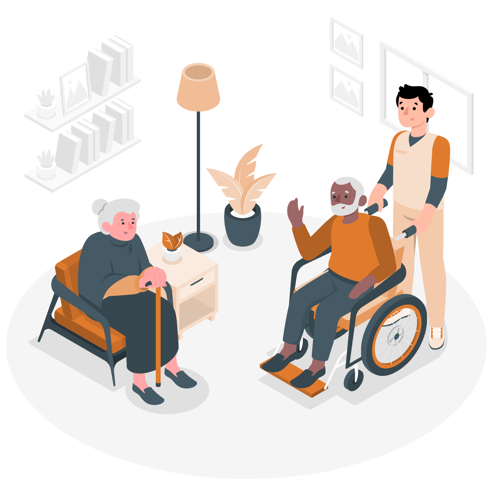
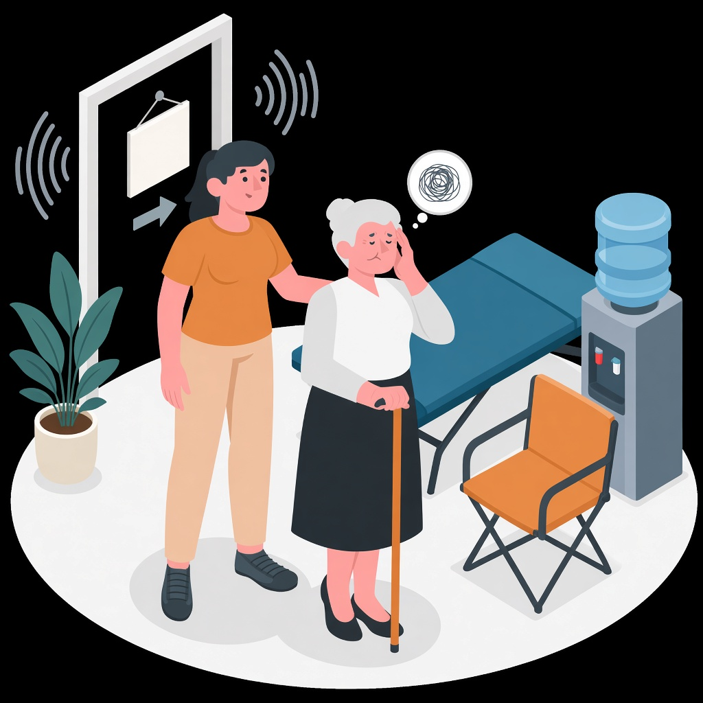
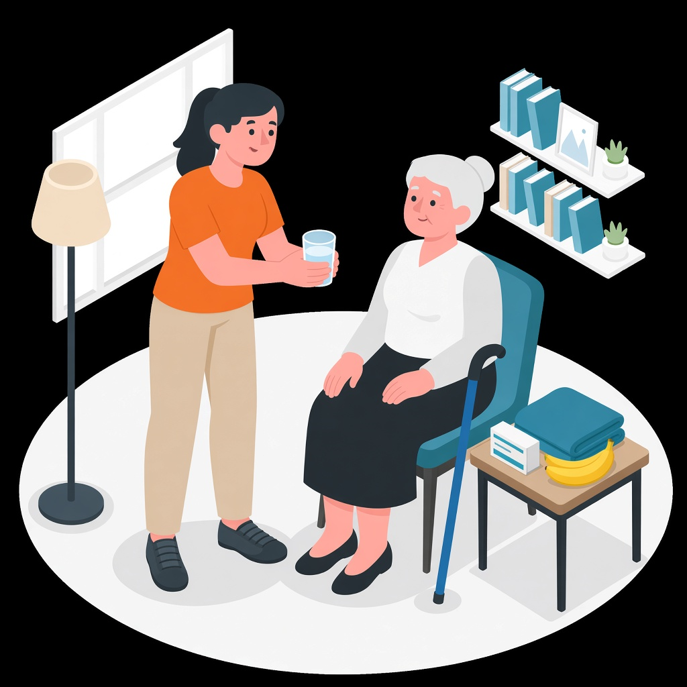
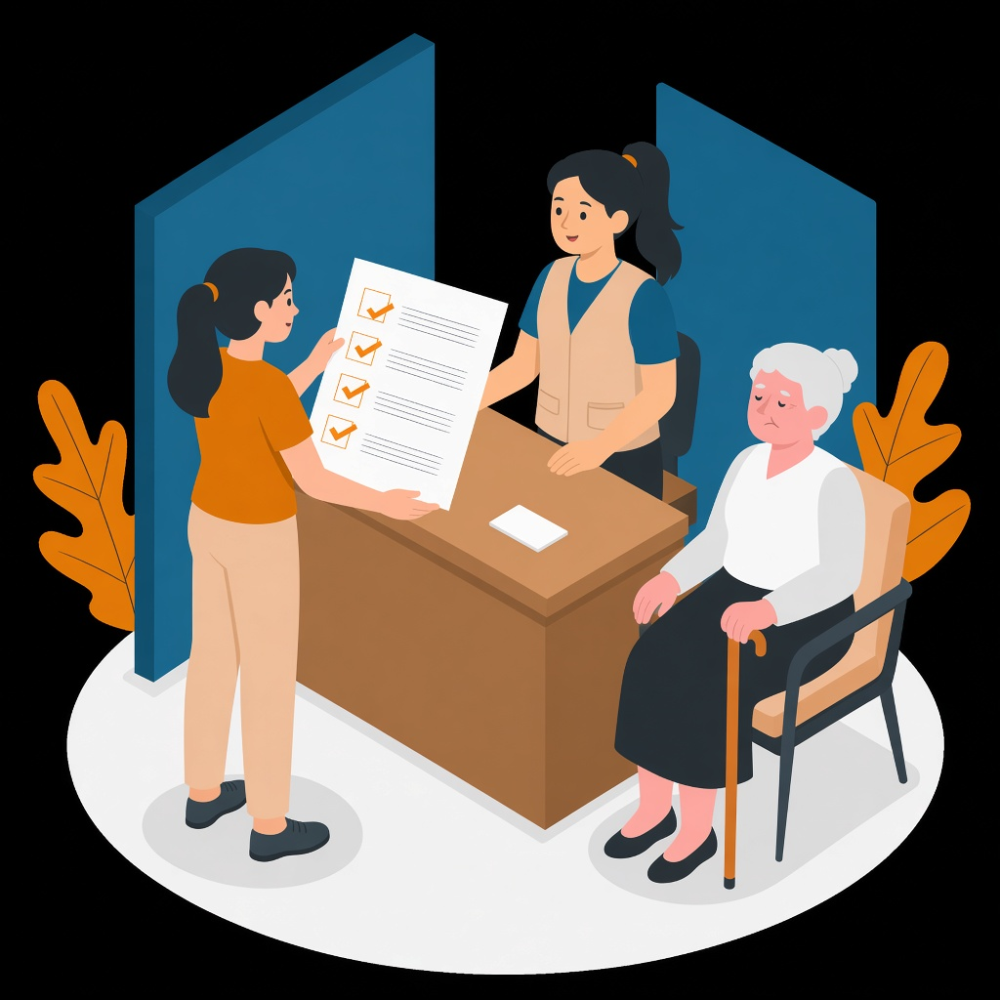
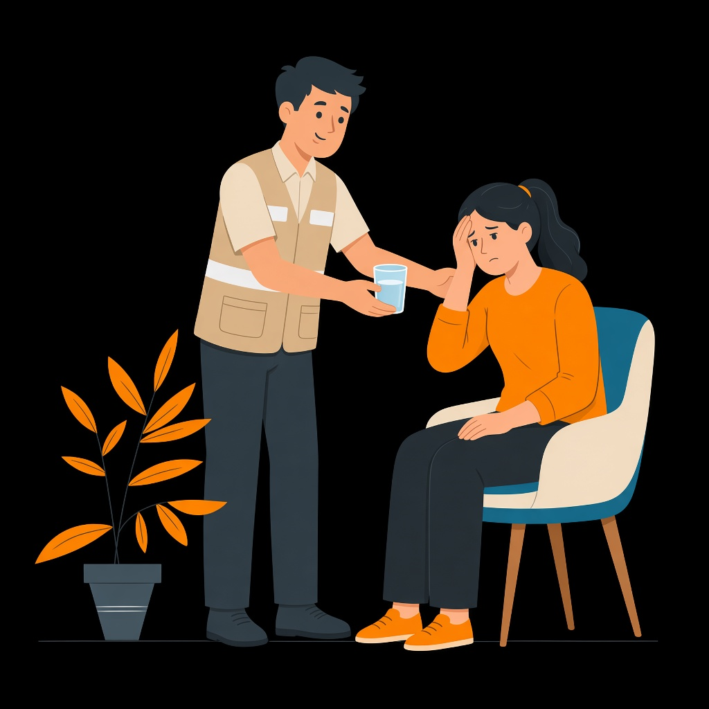

Uma lição sobre proteger a pessoa com demência num espaço de acolhimento, comunicar as suas necessidades e pedir ajuda no momento certo.

O protótipo concretiza a L4 a partir da estruturação inicial da Udemy. Mantém o formato comum às cinco lições e torna visível o que será produzido, sem apresentar como concluídos os media que ainda não foram gravados.
| Requisito do S5 | Evidência nesta entrega | Estado |
|---|---|---|
| Estrutura e conteúdos | Objetivos, sequência Udemy e narração final por cena no guião. | Feito |
| Recursos multimédia | Cinco ilustrações, grafismo previsto e storyboard; voz, PowerPoint e MP4 ficam para S6. | Parcial |
| Matterport | Visita «O melhor lugar»: seis paragens, etiquetas, crises e roteiro de ≈ 60 s. | Em preparação |
| Atividade e avaliação | Artigo com cenário de crise, quatro perguntas, Teste 4 com feedback e cartão de bolso. | Feito |
| Coerência entre lições | Voz própria sem avatar, ilustração plana azul/laranja, música comum e vídeo Matterport gravado. | Definido |
| Aula | Formato | Duração | Conteúdo demonstrado pelo protótipo |
|---|---|---|---|
| Aula 13 · Chegar a um sítio que não é casa | Vídeo — gancho | ≈ 50 s | Chegada de D. Rosa e Ana a um espaço de acolhimento. |
| Aula 14 · Necessidades e encaminhamento | Vídeo — conteúdo | ≈ 3 min 40 s | Necessidades, visita 3D, comunicação à equipa, sinais de alarme e apoio ao cuidador. |
| Aula 15 · O que faria nesta situação? | Artigo + cartão PDF | ≈ 2 min | Cenário de cheia, incêndio ou conflito armado e quatro respostas de aplicação. |
| Teste 4 · Quiz | Escolha múltipla | ≈ 1,5 min | Quatro perguntas com feedback por opção. |
| Aula 16 · Síntese e próximo passo | Vídeo — síntese | ≈ 30 s | Proteger, responder, manter rotina possível, comunicar e pedir ajuda. |
O storyboard segue o modelo comum do grupo. As ilustrações funcionam como evidência visual do protótipo e serão colocadas nos diapositivos equivalentes do PowerPoint. A voz será gravada posteriormente, com câmara desligada e sem avatar.
| Cena | Visual | Função e estado |
|---|---|---|
| 1–2 · Chegada |  | Gancho: a saída de casa cria ruído, desorientação e risco de afastamento. Ilustração pronta. |
| 3–4 · Abertura | Imagem da chegada + título e quatro ícones | Apresenta segurança, necessidades, rotina e identificação. Grafismo no S6. |
| 5 · Necessidades |  | Água, alimentação, medicação, descanso e objeto familiar. Ilustração pronta. |
| 6 · Visita 3D | Escolha do lugar mais seguro, longe da saída e do ruído. Gravação no S6. | |
| 7 · Sinalizar |  | Comunicar a demência e entregar a ficha da pessoa à equipa. Ilustração pronta. |
| 8 · Alarmes | Três cartões: confusão súbita · queda · recusa de comer/beber | Separar 112, SNS 24 e apoio da equipa. Grafismo no S6. |
| 9 · Cuidador |  | Pedir ajuda também é cuidar. Ilustração pronta. |
| 10–12 · Fecho | Cartão de bolso + síntese + mapa das cinco lições | Consolida prioridades e abre a L5. Montagem no S6. |
A visita decorre num espaço de acolhimento, e não na casa da família. A versão de protótipo define o roteiro e as etiquetas; a gravação será incluída como vídeo de aproximadamente 60 segundos na Aula 14. O link da visita será opcional na Aula 15 e nunca será necessário para responder ao quiz.
| # | Paragem / etiqueta | Mensagem | Estado |
|---|---|---|---|
| 1 | Balcão · «Sinalizar a demência» | Dizer que D. Rosa tem demência e entregar a ficha da pessoa. | Roteiro feito |
| 2 | Casa de banho / água · «Necessidades básicas» | Água, casa de banho, medicação e descanso são prioridades. | Roteiro feito |
| 3 | Saída · «Risco de se perder» | Num pavilhão, numa ZCAP ou num centro de deslocados, não deixar a pessoa sozinha junto à porta. | Roteiro feito |
| 4 | Zona calma · «O sítio certo» | Ficar longe da saída e do ruído, perto da casa de banho e com um objeto familiar. | Roteiro feito |
| 5 | Contactos · «Sinais de alarme» | Confusão súbita ou queda grave: 112 se for emergência; SNS 24 não substitui o 112. | Roteiro feito |
| 6 | Canto da Ana · «Pedir ajuda» | O cuidador também precisa de água, descanso e substituição temporária. | Roteiro feito |
Uma cheia, um incêndio ou um conflito armado obrigaram D. Rosa e Ana a sair de casa. Num espaço de acolhimento temporário, D. Rosa está desorientada e aproxima-se da saída. Ana está cansada e não sabe a quem pedir ajuda. Mais tarde, percebe que a mãe está muito mais confusa do que o habitual e caiu ao levantar-se.
Resposta breve: 1) como proteger D. Rosa e evitar que se afaste; 2) que informação dar à equipa; 3) como reagir à confusão súbita e à queda; 4) que apoio pedir para si. O cartão de bolso permite a autocorreção.
| Tema | Resposta esperada | Feedback central |
|---|---|---|
| Prioridades na chegada | Verificar segurança e necessidades básicas. | Sem segurança, água, medicação e supervisão, o resto espera. |
| Prevenir que se perca | Informar a equipa, supervisionar e identificar percursos seguros. | A autonomia mantém-se, mas não junto a uma saída de risco. |
| Confusão súbita | Procurar avaliação médica; ligar 112 se for emergência. | Uma alteração abrupta pode ser um problema médico. |
| Quem cuida | Comunicar necessidades e aceitar ajuda. | Pedir ajuda a tempo também é cuidar. |
Recurso: cartão de bolso em uma página A4, com necessidades, sinais de alarme, 112 / SNS 24 / equipa e apoio ao cuidador. Ficheiro-fonte: `Recursos/S5_Cartao_Bolso_L4.html`.